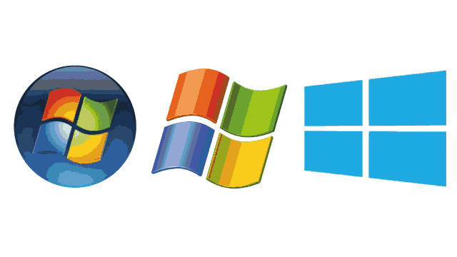

Copyright 2018 (c)
Microsoft Windows, or simply Windows, is a metafamily of graphical operating systems developed, marketed, and sold by Microsoft. It consists of several
families of operating systems, each of which cater to a certain sector of the computing
industry with the OS typically associated with IBM PC compatible architecture.
Active Windows families include Windows NT and Windows Embedded; these may encompass subfamilies,
e.g. Windows Embedded Compact (Windows CE) or Windows Server.
Defunct Windows families include Windows 9x, Windows Mobile and Windows Phone.
For more information send E-mail:-Windowskd.7@gmail.com or Call:-0172 12345, Mobile:-987654320.